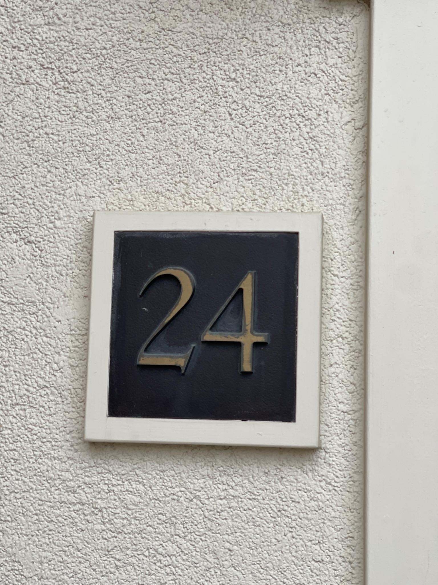
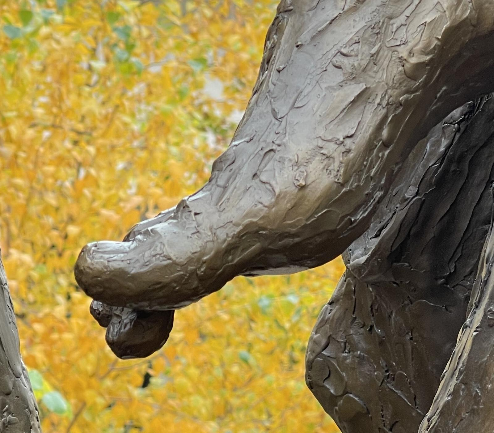
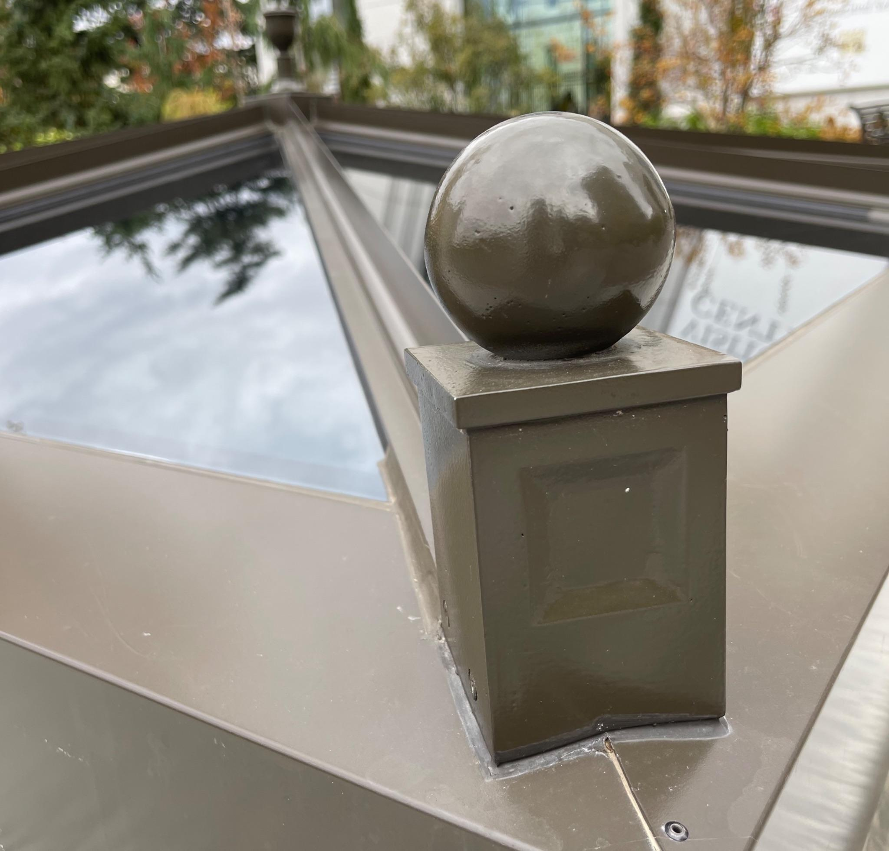
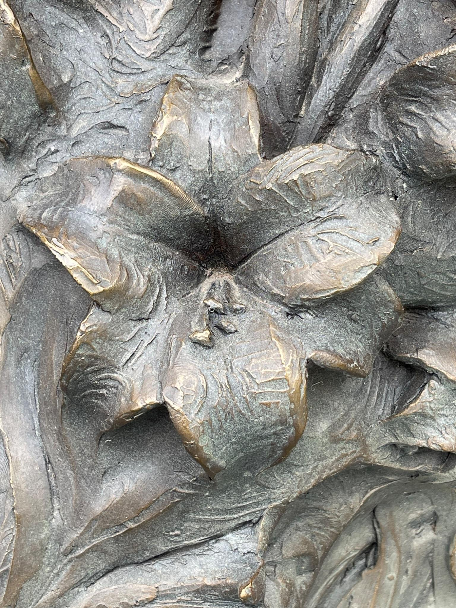
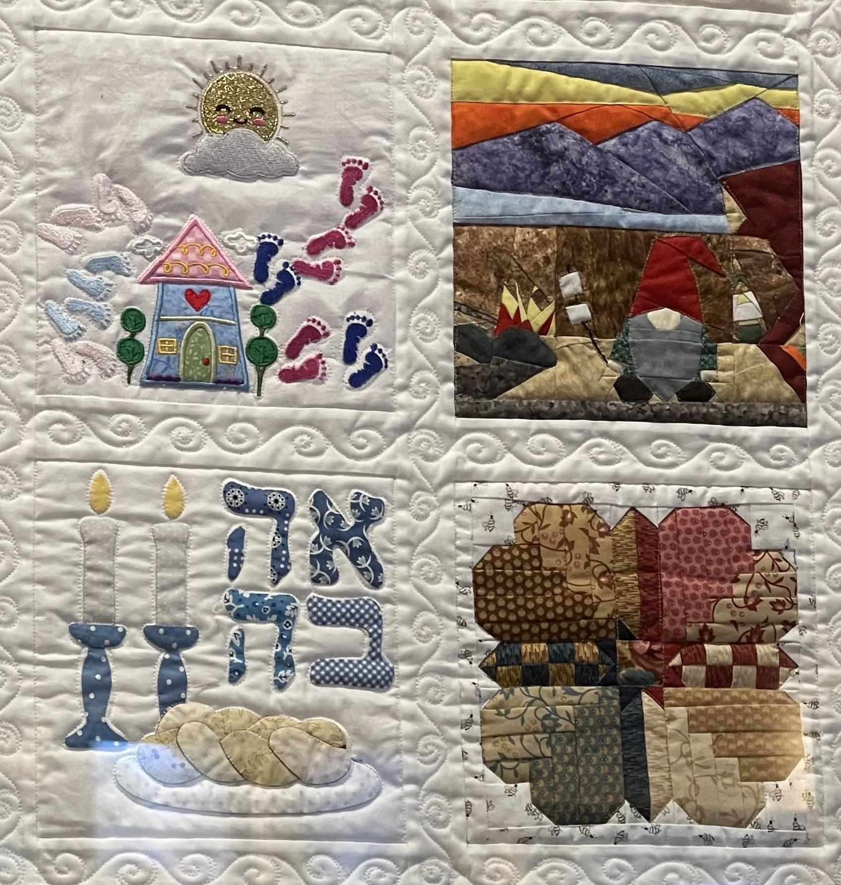
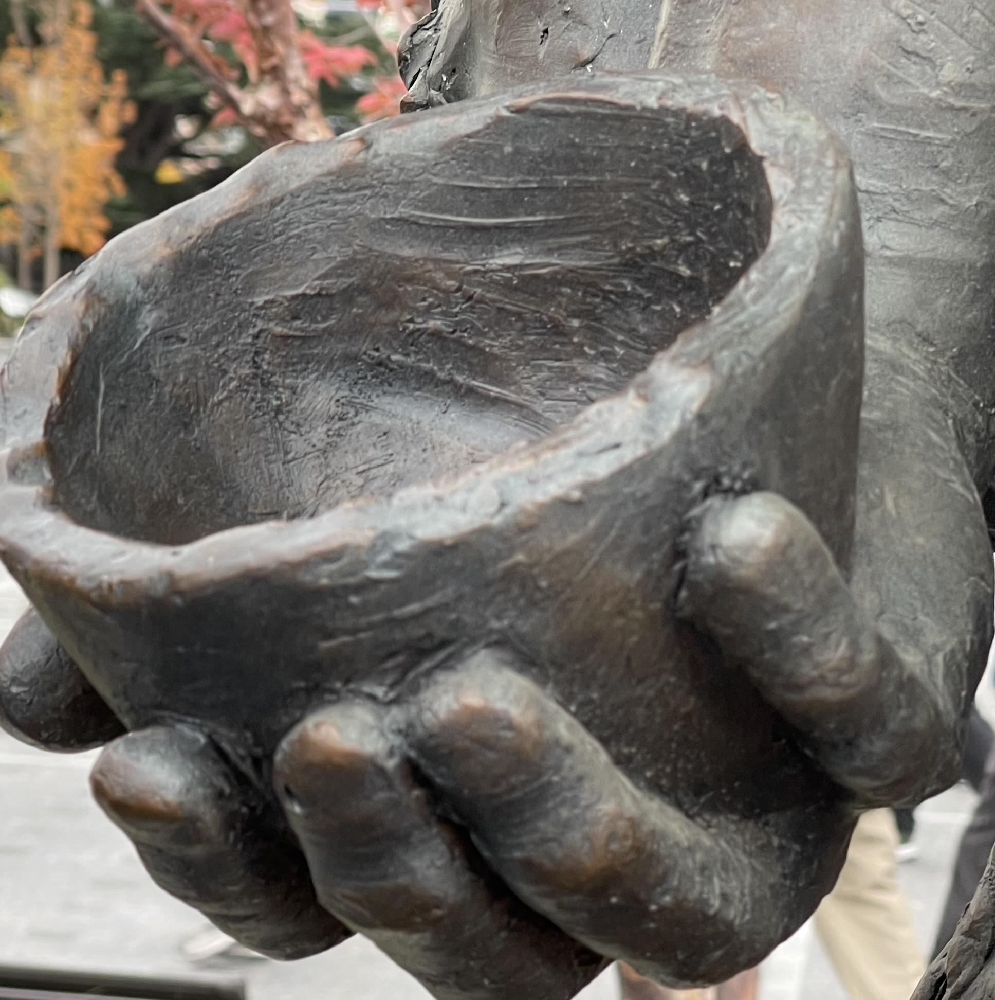
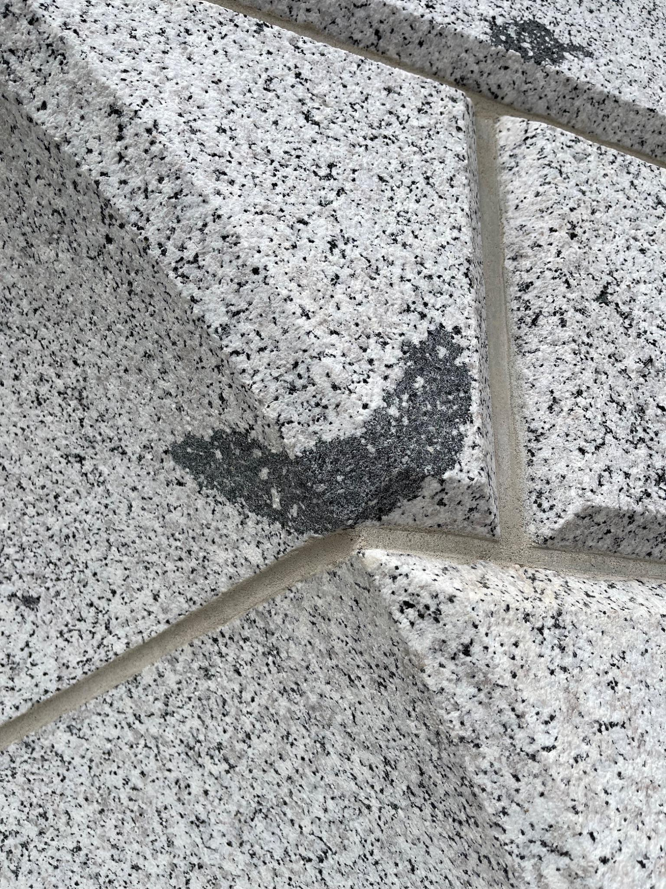
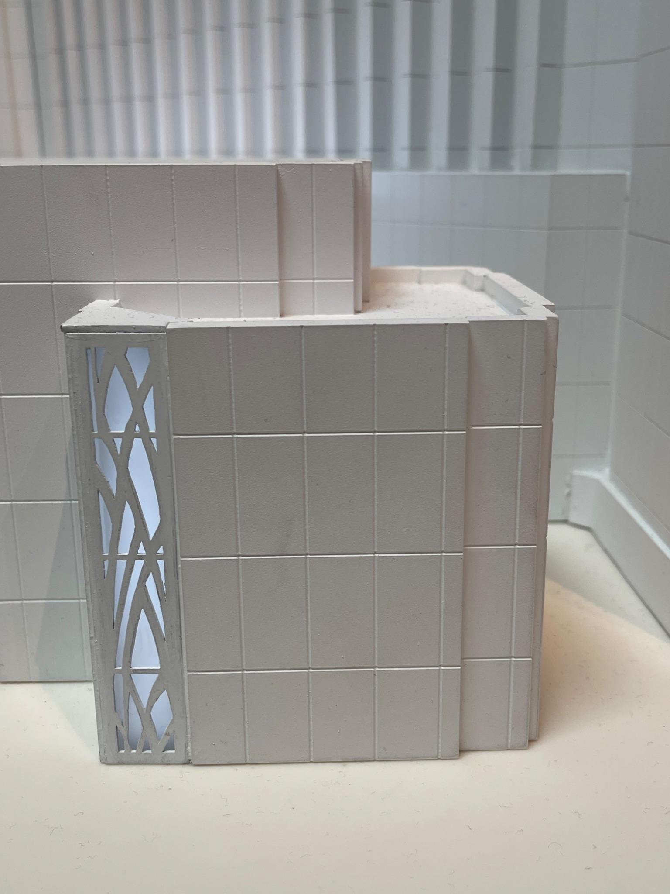
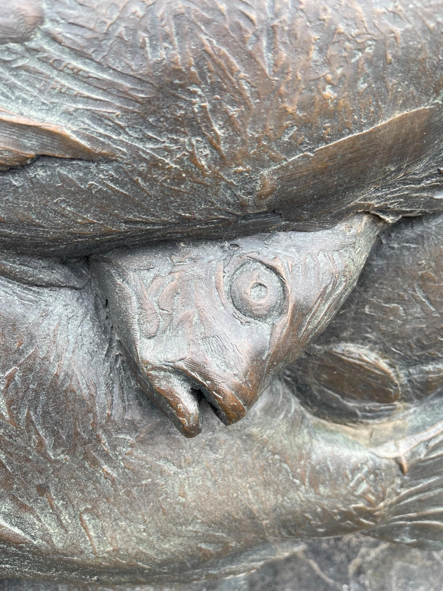
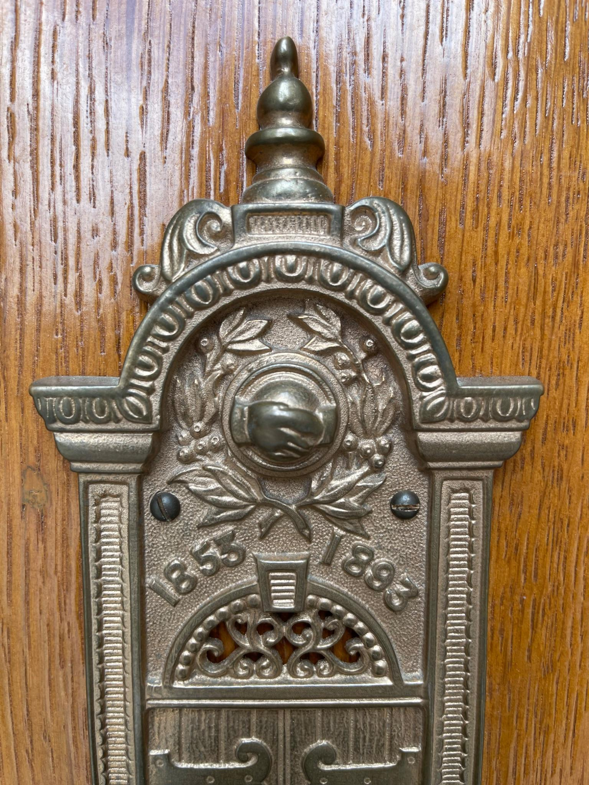

Rules
- Send selfies to 801-498-0140. Two or three of us will be judging the locations to see if your group found it.
- Make sure your whole group of youth is in your selfies.
- All selfies can be taken from the pavement. Do not step off paths onto grounds or plants.
- Do not leave Temple Square grounds, all selfies can be taken without leaving the grounds.
- Please do not disrupt other guests at Temple Square.
- Take the time to ponder where it is you're at and the history.
- Help each other in your group to find the locations.
- Make sure your selfies do not have gang signs (Mitchum's rule) This might be something you wanna show your grandchildren some day.
- Make sure your selfies don't fully obscure the location.
Strategies
Take random selfies so other groups, as they see you, will try to figure out what you were taking a selfie of. Do not send fake selfies in.
Notes:
- The validation for Conference Center parking can be found in the lower floor of the visitor center. I have sent a photo on GroupMe where this can be located.
- Each group will be given 28 locations, but not all of them are the same.
- All photo locations are publicly accessible as of last week. Do not go into Tabernacle or Assembly Hall, since none of the selfie locations are inside of those two buildings. Each of those buildings may be open tonight.
- The two buildings north of the Salt Lake Temple itself are actually now part of the temple and are not open or accessible to the public.
Scavenger Hunt Targets
Hint: you can tap on the image to keep track of which targets you have found















